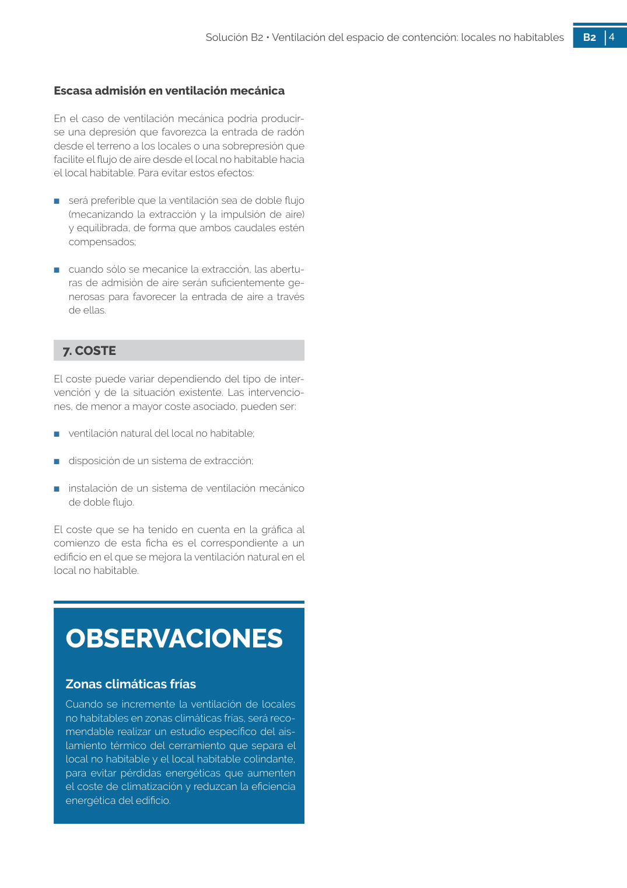

Guia de rehabilitacion frente al radon Fichas · edición sin-fecha · capa guia
Documento GUIA-PDF-f3314b0414fe · SHA-256 del PDF e58e54b822cf4ab00e258f0eb50c0f06a8c04e3730a7f530d224485e2a5bb02e
Página física 51 de 82.
Copia fiel del PDF fuente · Fuente oficial
Ficha de la disposición en la fuente oficial
Créditos y autoría en el PDF fuente. Reproducción con cita de fuente y autores.
Permiso literal: Se permite la reproducción total o parcial del contenido de este nible en el momento de su publicación. No se aceptará por las institu documento siempre y cuando se cite la fuente original
Este documento ha sido elaborado por el Instituto de ciencias
de la construcción Eduardo Torroja (IETcc) bajo la supervisión
de la Dirección General de Agenda Urbana y Arquitectura del
Ministerio de Transportes, Movilidad y Agenda Urbana (MITMA).
El IETcc, perteneciente al Consejo Superior de Investigaciones
Científicas (CSIC), es el centro de investigación en edificación
de referencia en España. La Unidad de Calidad en la Construc
ción del IETcc asesora al MITMA en la elaboración del Código
Técnico de la Edificación que, desde el año 2019, cuenta con la
sección HS6 Protección frente a la exposición al radón.
Dirección y Coordinación:
Ministerio de Transportes, Movilidad y Agenda Urbana
Isabel Marcos Anasagasti
Raquel Lara Campos
Eduardo González de Prado
Instituto de ciencias de la construcción Eduardo Torroja CSIC
Pilar Linares Alemparte
Autoras:
Pilar Linares Alemparte
Sonia García Ortega
Colaboradoras:
Virginia Sánchez Ramos
Karina Angélica García Pardo
Edita:
Centro de Publicaciones Secretaría General Técnica
Ministerio de Transportes, Movilidad y Agenda Urbana©
Entidad colaboradora:
Consejo Superior de Investigaciones Científicas · CSIC
Ministerio de Ciencia e Innovación
Catálogo de publicaciones de la Administración General
del Estado: publicacionesoficiales.boe.es
Centro virtual de publicaciones del Ministerio de Transpor
tes, Movilidad y Agenda Urbana: www.mitma.gob.es
Página web del Código Técnico de la Edificación:
SECRETARÍA GENERAL DE www.codigotecnico.org AGENDA URBANA Y VIVIENDA MINISTERIO GOBIERNO DE TRANSPORTES, MOVILIDAD DE ESPAÑA Y AGENDA URBANA DIRECCIÓN GENERAL DE
Maquetación y diseño gráfico: AGENDA URBANAY ARQUITECTURA
Lapizmente. Estrategia • Diseño Gráfico
CIENCIAFotografía portada: GOBIERNODE ESPAÑA MINISTERIODEE INNOVACIÓN
Sonia García Ortega
Los contenidos o ideas recogidas en este documento pertenecen a
sus autores. Este documento está basado en el conocimiento dispo Se permite la reproducción total o parcial del contenido de este
nible en el momento de su publicación. No se aceptará por las institu documento siempre y cuando se cite la fuente original y a sus
ciones ni los autores implicados responsabilidad de ningún tipo por el autores.
uso de estas recomendaciones. Las figuras tienen carácter ilustrativo
y no deben interpretarse como detalles constructivos.Formato: Texto de la página (Markdown)
4 Solución B2 • Ventilación del espacio de contención: locales no habitables B2 4 Escasa admisión en ventilación mecánica En el caso de ventilación mecánica podría producir se una depresión que favorezca la entrada de radón desde el terreno a los locales o una sobrepresión que facilite el flujo de aire desde el local no habitable hacia el local habitable. Para evitar estos efectos: ■ será preferible que la ventilación sea de doble flujo (mecanizando la extracción y la impulsión de aire) y equilibrada, de forma que ambos caudales estén compensados; ■ cuando sólo se mecanice la extracción, las abertu ras de admisión de aire serán suficientemente ge nerosas para favorecer la entrada de aire a través de ellas. 7. COSTE El coste puede variar dependiendo del tipo de inter vención y de la situación existente. Las intervencio nes, de menor a mayor coste asociado, pueden ser: ■ ventilación natural del local no habitable; ■ disposición de un sistema de extracción; ■ instalación de un sistema de ventilación mecánico de doble flujo. El coste que se ha tenido en cuenta en la gráfica al comienzo de esta ficha es el correspondiente a un edificio en el que se mejora la ventilación natural en el local no habitable. OBSERVACIONES Zonas climáticas frías Cuando se incremente la ventilación de locales no habitables en zonas climáticas frías, será reco mendable realizar un estudio específico del ais lamiento térmico del cerramiento que separa el local no habitable y el local habitable colindante, para evitar pérdidas energéticas que aumenten el coste de climatización y reduzcan la eficiencia energética del edificio.
